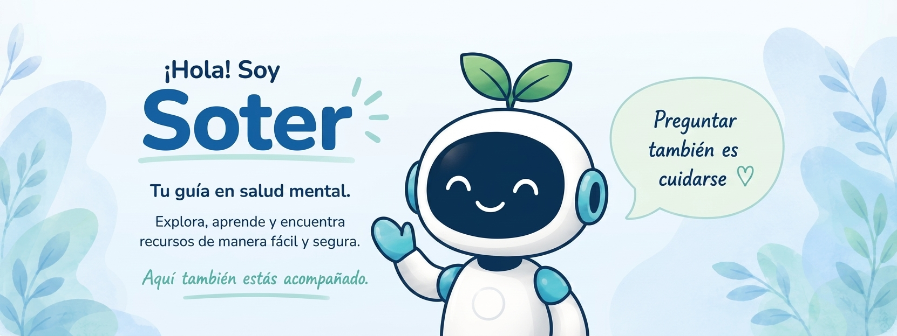

Soter — asistente de orientación de Conecta Contigo

Soter — asistente de orientación de Conecta Contigo
SOTER · tu espacio para comprender y encontrar apoyo
Conoce a Soter
Un espacio para comprender y orientarte.
🌱
¿Qué es Soter?
Contenido editable.
🎯
¿Cuál es su objetivo?
Contenido editable.
✅
¿Qué puede hacer?
Contenido editable.
🚫
¿Qué no puede hacer?
Contenido editable.
¿Cómo funciona Soter?
¿Cómo puedo comenzar?
Contenido editable.
¿Puedo escribir mi propia pregunta?
Contenido editable.
¿Qué tipo de información puedo encontrar?
Contenido editable.
¿Soter puede diagnosticarme?
Contenido editable.
¿Qué hago si necesito ayuda?
Contenido editable.
¿Qué puedo hacer si no sé cómo explicar lo que siento?
Contenido editable.